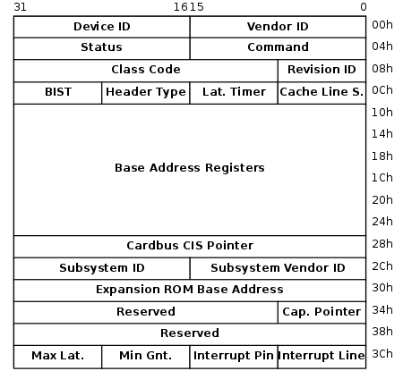

 <!DOCTYPE HTML>
<html lang="zh-Hans">
<head><meta name="generator" content="Hexo 3.8.0">
  <!-- hexo-inject:begin --><!-- hexo-inject:end --><meta charset="UTF-8">
  
    <title>PCI driver model | TO DO</title>
    <meta name="viewport" content="width=device-width, initial-scale=1,user-scalable=no">
    
    <meta name="author" content="Max">
    

    
    <meta name="description" content="由于要研究NVIDIA GPU的工作原理，需要对PCIe的原理掌握清楚，在此整理了一些知识点，包括PCI配置空间和访问。">
<meta name="keywords" content="pci">
<meta property="og:type" content="article">
<meta property="og:title" content="PCI driver model">
<meta property="og:url" content="http://juniorprincewang.github.io/2018/07/09/PCI-driver-model/index.html">
<meta property="og:site_name" content="TO DO">
<meta property="og:description" content="由于要研究NVIDIA GPU的工作原理，需要对PCIe的原理掌握清楚，在此整理了一些知识点，包括PCI配置空间和访问。">
<meta property="og:locale" content="zh-Hans">
<meta property="og:image" content="http://juniorprincewang.github.io/2018/07/09/PCI-driver-model/450px-Pci-config-space.svg.png">
<meta property="og:updated_time" content="2019-06-12T06:41:26.212Z">
<meta name="twitter:card" content="summary">
<meta name="twitter:title" content="PCI driver model">
<meta name="twitter:description" content="由于要研究NVIDIA GPU的工作原理，需要对PCIe的原理掌握清楚，在此整理了一些知识点，包括PCI配置空间和访问。">
<meta name="twitter:image" content="http://juniorprincewang.github.io/2018/07/09/PCI-driver-model/450px-Pci-config-space.svg.png">

    
    <link rel="alternative" href="/atom.xml" title="TO DO" type="application/atom+xml">
    
    
    <link rel="icon" href="/img/favicon.ico">
    
    
    <link rel="apple-touch-icon" href="/img/batman.png">
    <link rel="apple-touch-icon-precomposed" href="/img/batman.png">
    
    <link rel="stylesheet" href="/css/style.css"><!-- hexo-inject:begin --><!-- hexo-inject:end -->
</head>
</html>
  <body>
    <!-- hexo-inject:begin --><!-- hexo-inject:end --><header>
      
<div>
		
			<div id="imglogo">
				<a href="/"></a>
			</div>
			
			<div id="textlogo">
				<h1 class="site-name"><a href="/" title="TO DO">TO DO</a></h1>
				<h2 class="blog-motto">吾尝终日而思矣，不如须臾之所学也。</h2>
			</div>
			<div class="navbar"><a class="navbutton navmobile" href="#" title="Menu">
			</a></div>
			<nav class="animated">
				<ul>
					<ul>
					 
						<li><a href="/">Home</a></li>
					
						<li><a href="/archives">Archives</a></li>
					
						<li><a href="/about">About</a></li>
					
					<li>
 					
					<form class="search" action="//google.com/search" method="get" accept-charset="utf-8">
						<label>Search</label>
						<input type="search" id="search" name="q" autocomplete="off" maxlength="20" placeholder="Search">
						<input type="hidden" name="q" value="site:juniorprincewang.github.io">
					</form>
					
					</li>
				</ul>
			</ul></nav>			
</div>
    </header>
    <div id="container">
      <div id="main" class="post" itemscope itemprop="blogPost">
  
	<article itemprop="articleBody"> 
		<header class="article-info clearfix">
  <h1 itemprop="name">
    
      <a href="/2018/07/09/PCI-driver-model/" title="PCI driver model" itemprop="url">PCI driver model</a>
  </h1>
  <p class="article-author">By
       
		<a href="/about" title="Max" target="_blank" itemprop="author">Max</a>
		
  </p><p class="article-time">
    <time datetime="2018-07-09T12:12:10.000Z" itemprop="datePublished"> Published 2018-07-09</time>
    
  </p>
</header>
	<div class="article-content">
		
		<div id="toc" class="toc-article">
			<strong class="toc-title">Contents</strong>
		
			<ol class="toc"><li class="toc-item toc-level-1"><a class="toc-link" href="#PCI设备信息查看及寻址方式"><span class="toc-number">1.</span> <span class="toc-text">PCI设备信息查看及寻址方式</span></a><ol class="toc-child"><li class="toc-item toc-level-2"><a class="toc-link" href="#lspci命令"><span class="toc-number">1.1.</span> <span class="toc-text">lspci命令</span></a></li><li class="toc-item toc-level-2"><a class="toc-link" href="#文件系统"><span class="toc-number">1.2.</span> <span class="toc-text">文件系统</span></a></li></ol></li><li class="toc-item toc-level-1"><a class="toc-link" href="#PCI-配置空间"><span class="toc-number">2.</span> <span class="toc-text">PCI 配置空间</span></a></li><li class="toc-item toc-level-1"><a class="toc-link" href="#Linux-PCI设备驱动结构体"><span class="toc-number">3.</span> <span class="toc-text">Linux PCI设备驱动结构体</span></a></li><li class="toc-item toc-level-1"><a class="toc-link" href="#Linux-PCI设备配置空间访问"><span class="toc-number">4.</span> <span class="toc-text">Linux PCI设备配置空间访问</span></a></li><li class="toc-item toc-level-1"><a class="toc-link" href="#Linux-PCI设备驱动程序探测及注册："><span class="toc-number">5.</span> <span class="toc-text">Linux PCI设备驱动程序探测及注册：</span></a></li><li class="toc-item toc-level-1"><a class="toc-link" href="#参考"><span class="toc-number">6.</span> <span class="toc-text">参考</span></a></li></ol>
		
		</div>
		
		<p>由于要研究NVIDIA GPU的工作原理，需要对PCIe的原理掌握清楚，在此整理了一些知识点，包括PCI配置空间和访问。</p>
<a id="more"></a>

<p>Peripheral Component Interconnect Bus(PCI) 是一种总线接口。<br>每个总线设备有256字节的配置内存，可通过 <code>CONFIG_ADDRESS</code> 和 <code>CONFIG_DATA</code> 寄存器获取。<br>设备驱动的开发人员仅需知道设备的基地址 <code>base address</code> 和设备使用的 <code>IRQ line</code> 。<br>PCI设备的配置信息是小端存储 <code>Little Endian</code> 。</p>
<h1 id="PCI设备信息查看及寻址方式"><a href="#PCI设备信息查看及寻址方式" class="headerlink" title="PCI设备信息查看及寻址方式"></a>PCI设备信息查看及寻址方式</h1><h2 id="lspci命令"><a href="#lspci命令" class="headerlink" title="lspci命令"></a>lspci命令</h2><p>Linux 下可以通过 <code>lspci</code> 查看PCI设备。</p>
<figure class="highlight plain"><table><tr><td class="gutter"><pre><span class="line">1</span><br><span class="line">2</span><br><span class="line">3</span><br><span class="line">4</span><br><span class="line">5</span><br></pre></td><td class="code"><pre><span class="line">$ lspci</span><br><span class="line">01:00.0 VGA compatible controller: NVIDIA Corporation GK110B [GeForce GTX TITAN Black] (rev a1)</span><br><span class="line">|  |  |_Function Number</span><br><span class="line">|  |_PCI Device Number</span><br><span class="line">|_PCI Bus Number</span><br></pre></td></tr></table></figure>

<p>三个数字分别是 01： Bus Number, 00: Device Number, 0: Function Number。</p>
<p>设备驱动的配置信息，可以通过 <code>lspci</code>的 选项 <code>-x</code>， <code>-xxx</code>， <code>-xxxx</code> 打印出来，不过要用 <code>root</code> 用户执行。</p>
<p></p>
<p>为了确定PCI设备的位置，PCI设备必须能够映射到系统的IO端口地址空间或者内存映射的地址空间。<br>系统的固件、设备驱动或操作系统编排BARs，通过将配置命令写入到PCI控制器中来通知设备的地址映射。</p>
<h2 id="文件系统"><a href="#文件系统" class="headerlink" title="文件系统"></a>文件系统</h2><p>系统中的PCI设备信息可以从 <code>/proc/bus/pci/device</code> , <code>/sys/bus/pci/device</code> 文件系统中查看；<br>其中设备信息的表示格式为： <code>总线域（16位）</code>：<code>总线编号（8位）</code>：<code>设备编号（5位）</code>.<code>功能编号（3位）</code><br>由以上信息可以知道：每个总线域最多有256个PCI总线，每个总线最多有32个PCI设备，每个设备最多有8个功能；</p>
<h1 id="PCI-配置空间"><a href="#PCI-配置空间" class="headerlink" title="PCI 配置空间"></a>PCI 配置空间</h1><p>在驱动已探测到设备后, 它常常需要读或写 3 个地址空间: 内存, 端口, 和配置。 特别地, 存取配置空间对驱动是至关重要的, 因为这是唯一的找到设备被映射到内存和 I/O 空间的位置的方法。</p>
<p>Linux 将配置空间中的 <code>venderId</code>, <code>deviceId</code>, <code>classcode</code>, <code>subvendorId</code>, <code>subdeviceId</code>, <code>class_mask</code>, <code>driver_data</code>(kernel_ulong_t，不是必须的)抽象为 <code>struct pci_device_id</code> 结构体，PCI驱动程序用该结构体告诉内核，本身支持什么样的PCI设备列表；</p>
<p>这个结构包含不同的成员:<code>__u32 vendor</code> ; <code>__u32 device</code> 。这些指定一个设备的 PCI 供应商和设备 ID. 如果驱动可处理任何供应商或者设备<br>ID, 这些成员取值 <code>PCI_ANY_ID</code>。</p>
<figure class="highlight plain"><table><tr><td class="gutter"><pre><span class="line">1</span><br></pre></td><td class="code"><pre><span class="line">MODULE_DEVICE_TABLE(pci,ids);</span><br></pre></td></tr></table></figure>

<p>使用该宏将pci驱动程序支持的设备列表导出到用户空间，供热插拔系统为设备查找驱动程序使用；在编译模块的时候编译系统会抽取该宏数据并导出到用户空间。</p>
<h1 id="Linux-PCI设备驱动结构体"><a href="#Linux-PCI设备驱动结构体" class="headerlink" title="Linux PCI设备驱动结构体"></a>Linux PCI设备驱动结构体</h1><figure class="highlight plain"><table><tr><td class="gutter"><pre><span class="line">1</span><br></pre></td><td class="code"><pre><span class="line">#include &lt;linux/pci.h&gt;</span><br></pre></td></tr></table></figure>

<pre><code>包含 PCI 寄存器的符号名和几个供应商和设备 ID 值的头文件.</code></pre><figure class="highlight plain"><table><tr><td class="gutter"><pre><span class="line">1</span><br></pre></td><td class="code"><pre><span class="line">struct pci_dev;</span><br></pre></td></tr></table></figure>

<pre><code>表示内核中一个 PCI 设备的结构.</code></pre><figure class="highlight plain"><table><tr><td class="gutter"><pre><span class="line">1</span><br></pre></td><td class="code"><pre><span class="line">struct pci_driver;</span><br></pre></td></tr></table></figure>

<p>代表一个 <code>PCI 驱动</code> 结构，该结构体是 <code>PCI设备</code> 与 <code>PCI设备驱动程序</code> 的联系桥梁，通过该结构体可以查询到驱动程序的设备并初始化设备；<br>比较重要的字段如下：</p>
<figure class="highlight plain"><table><tr><td class="gutter"><pre><span class="line">1</span><br><span class="line">2</span><br><span class="line">3</span><br><span class="line">4</span><br><span class="line">5</span><br><span class="line">6</span><br><span class="line">7</span><br><span class="line">8</span><br><span class="line">9</span><br></pre></td><td class="code"><pre><span class="line">struct pci_driver&#123;</span><br><span class="line">	char *name;</span><br><span class="line">	struct pci_device_id *ids;</span><br><span class="line">	int (*probe)(struct pci_dev *dev,struct pci_device_id *id);</span><br><span class="line">	void (*remove)(struct pci_dev *dev);</span><br><span class="line">	int (*suspend)(struct pci_dev *dev,u32 state);</span><br><span class="line">	int (*resume)(struct pci_dev *dev);</span><br><span class="line">	... ...</span><br><span class="line">&#125;;</span><br></pre></td></tr></table></figure>

<figure class="highlight plain"><table><tr><td class="gutter"><pre><span class="line">1</span><br></pre></td><td class="code"><pre><span class="line">struct pci_device_id;</span><br></pre></td></tr></table></figure>

<pre><code>描述这个驱动支持的 PCI 设备类型的结构.</code></pre><h1 id="Linux-PCI设备配置空间访问"><a href="#Linux-PCI设备配置空间访问" class="headerlink" title="Linux PCI设备配置空间访问"></a>Linux PCI设备配置空间访问</h1><figure class="highlight plain"><table><tr><td class="gutter"><pre><span class="line">1</span><br><span class="line">2</span><br><span class="line">3</span><br><span class="line">4</span><br></pre></td><td class="code"><pre><span class="line">struct pci_dev *pci_find_device(unsigned int vendor, unsigned int device, struct pci_dev *from);</span><br><span class="line">struct pci_dev *pci_find_device_reverse(unsigned int vendor, unsigned int device, const struct pci_dev *from);</span><br><span class="line">struct pci_dev *pci_find_subsys (unsigned int vendor, unsigned int device, unsigned int ss_vendor, unsigned int ss_device, const struct pci_dev *from);</span><br><span class="line">struct pci_dev *pci_find_class(unsigned int class, struct pci_dev *from);</span><br></pre></td></tr></table></figure>

<p>在设备列表中搜寻带有一个特定签名的设备, 或者属于一个特定类的. 返回值是 NULL 如果没找到. from 用来继续一个搜索; 在你第一次调用任一个函数时它必须是 NULL, 并且它必须指向刚刚找到的设备如果你寻找更多的设备. 这些函数不推荐使用, 用 pci_get_ 变体来代替.</p>
<figure class="highlight plain"><table><tr><td class="gutter"><pre><span class="line">1</span><br><span class="line">2</span><br><span class="line">3</span><br></pre></td><td class="code"><pre><span class="line">struct pci_dev *pci_get_device(unsigned int vendor, unsigned int device, struct pci_dev *from);</span><br><span class="line">struct pci_dev *pci_get_subsys(unsigned int vendor, unsigned int device, unsigned int ss_vendor, unsigned int ss_device, struct pci_dev *from);</span><br><span class="line">struct pci_dev *pci_get_slot(struct pci_bus *bus, unsigned int devfn);</span><br></pre></td></tr></table></figure>

<p>在设备列表中搜索一个特定签名的设备，或者属于一个特定类。如果没找到，返回值是 NULL。 <code>from</code> 用来继续搜索； 在第一次调用任一个函数时它必须是 NULL， 并且如果想要搜寻更多的设备，它必须指向刚刚找到的设备。返回的结构使它的引用计数递增，并且在调用者完成它, 函数 pci_dev_put 必须被调用.</p>
<figure class="highlight plain"><table><tr><td class="gutter"><pre><span class="line">1</span><br><span class="line">2</span><br><span class="line">3</span><br><span class="line">4</span><br><span class="line">5</span><br><span class="line">6</span><br></pre></td><td class="code"><pre><span class="line">int pci_read_config_byte(struct pci_dev *dev, int where, u8 *val);</span><br><span class="line">int pci_read_config_word(struct pci_dev *dev, int where, u16 *val);</span><br><span class="line">int pci_read_config_dword(struct pci_dev *dev, int where, u32 *val);</span><br><span class="line">int pci_write_config_byte (struct pci_dev *dev, int where, u8 *val);</span><br><span class="line">int pci_write_config_word (struct pci_dev *dev, int where, u16 *val);</span><br><span class="line">int pci_write_config_dword (struct pci_dev *dev, int where, u32 *val);</span><br></pre></td></tr></table></figure>

<p>读或写 PCI 配置寄存器的函数。尽管 Linux 内核负责字节序, 必须小心字节序，尤其从单个字节组合多字节值时. PCI 总线是小端。</p>
<figure class="highlight plain"><table><tr><td class="gutter"><pre><span class="line">1</span><br><span class="line">2</span><br><span class="line">3</span><br></pre></td><td class="code"><pre><span class="line">unsigned long pci_resource_start(struct pci_dev *dev, int bar);</span><br><span class="line">unsigned long pci_resource_end(struct pci_dev *dev, int bar);</span><br><span class="line">unsigned long pci_resource_flags(struct pci_dev *dev, int bar);</span><br></pre></td></tr></table></figure>

<p>处理 PCI 设备资源的函数。</p>
<h1 id="Linux-PCI设备驱动程序探测及注册："><a href="#Linux-PCI设备驱动程序探测及注册：" class="headerlink" title="Linux PCI设备驱动程序探测及注册："></a>Linux PCI设备驱动程序探测及注册：</h1><figure class="highlight plain"><table><tr><td class="gutter"><pre><span class="line">1</span><br><span class="line">2</span><br><span class="line">3</span><br></pre></td><td class="code"><pre><span class="line">int pci_register_driver(struct pci_driver *drv);</span><br><span class="line">int pci_module_init(struct pci_driver *drv);</span><br><span class="line">void pci_unregister_driver(struct pci_driver *drv);</span><br></pre></td></tr></table></figure>

<p>从内核注册或注销一个 PCI 驱动的函数.</p>
<figure class="highlight plain"><table><tr><td class="gutter"><pre><span class="line">1</span><br></pre></td><td class="code"><pre><span class="line">int pci_enable_device(struct pci_dev *dev);</span><br></pre></td></tr></table></figure>

<p>使能一个 PCI 设备.</p>
<figure class="highlight plain"><table><tr><td class="gutter"><pre><span class="line">1</span><br><span class="line">2</span><br><span class="line">3</span><br><span class="line">4</span><br><span class="line">5</span><br><span class="line">6</span><br><span class="line">7</span><br><span class="line">8</span><br><span class="line">9</span><br><span class="line">10</span><br><span class="line">11</span><br><span class="line">12</span><br><span class="line">13</span><br><span class="line">14</span><br><span class="line">15</span><br><span class="line">16</span><br><span class="line">17</span><br><span class="line">18</span><br><span class="line">19</span><br><span class="line">20</span><br><span class="line">21</span><br><span class="line">22</span><br><span class="line">23</span><br><span class="line">24</span><br><span class="line">25</span><br><span class="line">26</span><br><span class="line">27</span><br><span class="line">28</span><br><span class="line">29</span><br><span class="line">30</span><br><span class="line">31</span><br><span class="line">32</span><br><span class="line">33</span><br><span class="line">34</span><br><span class="line">35</span><br><span class="line">36</span><br><span class="line">37</span><br><span class="line">38</span><br><span class="line">39</span><br><span class="line">40</span><br><span class="line">41</span><br><span class="line">42</span><br><span class="line">43</span><br><span class="line">44</span><br><span class="line">45</span><br><span class="line">46</span><br><span class="line">47</span><br><span class="line">48</span><br><span class="line">49</span><br><span class="line">50</span><br><span class="line">51</span><br><span class="line">52</span><br><span class="line">53</span><br><span class="line">54</span><br><span class="line">55</span><br><span class="line">56</span><br><span class="line">57</span><br><span class="line">58</span><br><span class="line">59</span><br><span class="line">60</span><br><span class="line">61</span><br><span class="line">62</span><br><span class="line">63</span><br><span class="line">64</span><br><span class="line">65</span><br><span class="line">66</span><br><span class="line">67</span><br><span class="line">68</span><br><span class="line">69</span><br><span class="line">70</span><br><span class="line">71</span><br><span class="line">72</span><br><span class="line">73</span><br><span class="line">74</span><br><span class="line">75</span><br><span class="line">76</span><br><span class="line">77</span><br><span class="line">78</span><br></pre></td><td class="code"><pre><span class="line">int pci_probe(struct pci_dev *dev,struct pci_device_id *id)&#123;</span><br><span class="line"></span><br><span class="line">	struct pci_privdata *data=NULL;</span><br><span class="line"></span><br><span class="line">	struct resource *resource=NULL;</span><br><span class="line"></span><br><span class="line">	if(pci_device_is_present(dev))&#123;</span><br><span class="line">		//1,不支持pci总线;</span><br><span class="line">	&#125;</span><br><span class="line"></span><br><span class="line">                                      </span><br><span class="line">	if(pci_enable_device(dev))&#123;</span><br><span class="line"></span><br><span class="line">		//2,使能设备;</span><br><span class="line"></span><br><span class="line">	&#125;</span><br><span class="line"></span><br><span class="line">	//3,从配置空间获取信息；</span><br><span class="line"></span><br><span class="line">	data=kmalloc(sizeof(struct pci_privdata),GFP_KERNEL);</span><br><span class="line"></span><br><span class="line">	data-&gt;phy_addr=pci_resource_start(dev,1);</span><br><span class="line"></span><br><span class="line">	data-&gt;size          =pci_resource_len(dev,1);</span><br><span class="line"></span><br><span class="line">	data-&gt;flags         =pci_resource_flags(dev,1);</span><br><span class="line"></span><br><span class="line">	if(data-&gt;flags != IORESOURCE_MEM)&#123;</span><br><span class="line"></span><br><span class="line">		//4,判断是否为内存空间或IO端口空间；</span><br><span class="line"></span><br><span class="line">	&#125;</span><br><span class="line"></span><br><span class="line">	//resource=request_mem_region(data-&gt;phy_addr,data-&gt;size,NAME);</span><br><span class="line"></span><br><span class="line">	resource=pci_request_region(data-&gt;phy_addr,data-&gt;size,NAME);</span><br><span class="line"></span><br><span class="line">	if(!resource)&#123;</span><br><span class="line"></span><br><span class="line">		//5,独占设备;</span><br><span class="line"></span><br><span class="line">	&#125;</span><br><span class="line"></span><br><span class="line">	//6, io内存映射，映射到内核虚拟地址空间;</span><br><span class="line"></span><br><span class="line">	data-&gt;addr=ioremap(data-&gt;phy_addr,data-&gt;size);</span><br><span class="line"></span><br><span class="line">	//7,设置PCI设备私有数据;</span><br><span class="line"></span><br><span class="line">	pci_set_drvdata(dev,data);</span><br><span class="line"></span><br><span class="line">	//8,设置PCI设备为DMA主设备;</span><br><span class="line"></span><br><span class="line">	pci_set_master(dev);</span><br><span class="line"></span><br><span class="line">	return0;</span><br><span class="line"></span><br><span class="line">&#125;</span><br><span class="line"></span><br><span class="line"></span><br><span class="line"></span><br><span class="line">int  pci_remove(struct pci_dev *dev)&#123;</span><br><span class="line"></span><br><span class="line">	//与probe函数相反的顺序将probe函数中的资源都释放掉;</span><br><span class="line"></span><br><span class="line">	return 0;</span><br><span class="line"></span><br><span class="line">&#125;</span><br><span class="line"></span><br><span class="line"></span><br><span class="line"></span><br><span class="line">//在驱动模块中注册驱动数据结构;</span><br><span class="line"></span><br><span class="line">static int __init pci_module_init(void)&#123;</span><br><span class="line"></span><br><span class="line">	return pci_register_driver(&amp;pci_driver);</span><br><span class="line"></span><br><span class="line">&#125;</span><br></pre></td></tr></table></figure>

<h1 id="参考"><a href="#参考" class="headerlink" title="参考"></a>参考</h1><ol>
<li><a href="https://en.wikipedia.org/wiki/PCI_configuration_space" target="_blank" rel="noopener">PCI configuration space</a></li>
<li><a href="https://falsinsoft.blogspot.com/2017/09/access-pci-device-registry-from-linux.html" target="_blank" rel="noopener">Access PCI device registry from Linux user space</a></li>
<li><a href="https://linux.die.net/man/8/lspci" target="_blank" rel="noopener">lspci(8) - Linux man page</a></li>
<li><a href="https://falsinsoft.blogspot.com/2013/10/access-physical-memory-in-linux.html" target="_blank" rel="noopener">Access physical memory from Linux user space</a></li>
<li><a href="http://haifux.org/lectures/256/haifux-pcie.pdf" target="_blank" rel="noopener">The anatomy of a PCI/PCI Express kernel driver</a></li>
<li><a href="http://linuxkernel51.blogspot.com/2012/08/linux-pci-driver-model.html" target="_blank" rel="noopener">Linux PCI Driver Model</a></li>
<li><a href="https://wiki.osdev.org/PCI" target="_blank" rel="noopener">PCI</a></li>
<li><a href="https://wiki.osdev.org/PCI_Express" target="_blank" rel="noopener">PCI Express</a></li>
<li>Linux Device Driver, Third Edition</li>
<li><a href="http://www.deansys.com/doc/ldd3/ch12.html#ThePCIInterface.sect1" target="_blank" rel="noopener">第 12 章 PCI 驱动</a></li>
<li><a href="https://blog.csdn.net/a372048518/article/details/54143059" target="_blank" rel="noopener">LDD之PCI设备</a><br>（<a href="https://github.com/cirosantilli/linux-kernel-module-cheat/blob/6788a577c394a2fc512d8f3df0806d84dc09f355/kernel_module/pci.c）" target="_blank" rel="noopener">https://github.com/cirosantilli/linux-kernel-module-cheat/blob/6788a577c394a2fc512d8f3df0806d84dc09f355/kernel_module/pci.c）</a></li>
</ol>
  
	</div>
		<footer class="article-footer clearfix">
<div class="article-catetags">

<div class="article-categories">
  <span></span>
  <a class="article-category-link" href="/categories/GPU/">GPU</a>
</div>


  <div class="article-tags">
  
  <span></span> <a href="/tags/pci/">pci</a>
  </div>

</div>


	<div class="article-share" id="share">
	
	  <div data-url="http://juniorprincewang.github.io/2018/07/09/PCI-driver-model/" data-title="PCI driver model | TO DO" data-tsina="null" class="share clearfix">
	  </div>
	
	</div>


</footer>

   	       
	</article>
	
<nav class="article-nav clearfix">
 
 <div class="prev">
 <a href="/2018/07/14/NVIDIA-GPU-硬件介绍/" title="NVIDIA GPU 硬件介绍">
  <strong>上一篇：</strong><br>
  <span>
  NVIDIA GPU 硬件介绍</span>
</a>
</div>


<div class="next">
<a href="/2018/07/09/NVIDIA-GPU虚拟内存/" title="NVIDIA GPU虚拟内存">
 <strong>下一篇：</strong><br> 
 <span>NVIDIA GPU虚拟内存
</span>
</a>
</div>

</nav>

	


</div>  
      <script async src="https://busuanzi.ibruce.info/busuanzi/2.3/busuanzi.pure.mini.js"></script>

<div class="openaside"><a class="navbutton" href="#" title="Show Sidebar"></a></div>

  <div id="toc" class="toc-aside">
  <strong class="toc-title">Contents</strong>
 
 <ol class="toc"><li class="toc-item toc-level-1"><a class="toc-link" href="#PCI设备信息查看及寻址方式"><span class="toc-number">1.</span> <span class="toc-text">PCI设备信息查看及寻址方式</span></a><ol class="toc-child"><li class="toc-item toc-level-2"><a class="toc-link" href="#lspci命令"><span class="toc-number">1.1.</span> <span class="toc-text">lspci命令</span></a></li><li class="toc-item toc-level-2"><a class="toc-link" href="#文件系统"><span class="toc-number">1.2.</span> <span class="toc-text">文件系统</span></a></li></ol></li><li class="toc-item toc-level-1"><a class="toc-link" href="#PCI-配置空间"><span class="toc-number">2.</span> <span class="toc-text">PCI 配置空间</span></a></li><li class="toc-item toc-level-1"><a class="toc-link" href="#Linux-PCI设备驱动结构体"><span class="toc-number">3.</span> <span class="toc-text">Linux PCI设备驱动结构体</span></a></li><li class="toc-item toc-level-1"><a class="toc-link" href="#Linux-PCI设备配置空间访问"><span class="toc-number">4.</span> <span class="toc-text">Linux PCI设备配置空间访问</span></a></li><li class="toc-item toc-level-1"><a class="toc-link" href="#Linux-PCI设备驱动程序探测及注册："><span class="toc-number">5.</span> <span class="toc-text">Linux PCI设备驱动程序探测及注册：</span></a></li><li class="toc-item toc-level-1"><a class="toc-link" href="#参考"><span class="toc-number">6.</span> <span class="toc-text">参考</span></a></li></ol>
 
  </div>

<div id="asidepart">
<div class="closeaside"><a class="closebutton" href="#" title="Hide Sidebar"></a></div>
<aside class="clearfix">

  
<div class="github-card">
<p class="asidetitle">Github Card</p>
<div class="github-card" data-github="juniorprincewang" data-theme="medium"></div>
<script type="text/javascript" src="//cdn.jsdelivr.net/github-cards/latest/widget.js"></script>
</div>


  
<div class="categorieslist">
	<p class="asidetitle">Categories</p>
		<ul>
		
		  
			<li><a href="/categories/GPU/CUDA/" title="CUDA">CUDA<sup>8</sup></a></li>
		  
		
		  
			<li><a href="/categories/GPU/" title="GPU">GPU<sup>17</sup></a></li>
		  
		
		  
			<li><a href="/categories/GPU/GPU虚拟化/" title="GPU虚拟化">GPU虚拟化<sup>3</sup></a></li>
		  
		
		  
			<li><a href="/categories/QEMU/" title="QEMU">QEMU<sup>5</sup></a></li>
		  
		
		  
			<li><a href="/categories/linux/c/" title="c">c<sup>1</sup></a></li>
		  
		
		  
			<li><a href="/categories/security/crypto/" title="crypto">crypto<sup>1</sup></a></li>
		  
		
		  
			<li><a href="/categories/ctf/" title="ctf">ctf<sup>1</sup></a></li>
		  
		
		  
			<li><a href="/categories/git/" title="git">git<sup>3</sup></a></li>
		  
		
		  
			<li><a href="/categories/hexo/" title="hexo">hexo<sup>2</sup></a></li>
		  
		
		  
			<li><a href="/categories/linux/kernel/" title="kernel">kernel<sup>2</sup></a></li>
		  
		
		  
			<li><a href="/categories/linux/" title="linux">linux<sup>20</sup></a></li>
		  
		
		  
			<li><a href="/categories/GPU/nouveau/" title="nouveau">nouveau<sup>3</sup></a></li>
		  
		
		  
			<li><a href="/categories/security/pwn/" title="pwn">pwn<sup>7</sup></a></li>
		  
		
		  
			<li><a href="/categories/pwnable-kr/" title="pwnable.kr">pwnable.kr<sup>1</sup></a></li>
		  
		
		  
			<li><a href="/categories/python/" title="python">python<sup>1</sup></a></li>
		  
		
		  
			<li><a href="/categories/security/" title="security">security<sup>9</sup></a></li>
		  
		
		  
			<li><a href="/categories/linux/shell/" title="shell">shell<sup>2</sup></a></li>
		  
		
		  
			<li><a href="/categories/solutions/" title="solutions">solutions<sup>7</sup></a></li>
		  
		
		  
			<li><a href="/categories/sql注入/" title="sql注入">sql注入<sup>3</sup></a></li>
		  
		
		  
			<li><a href="/categories/tools/" title="tools">tools<sup>1</sup></a></li>
		  
		
		  
			<li><a href="/categories/linux/vim/" title="vim">vim<sup>2</sup></a></li>
		  
		
		  
			<li><a href="/categories/虚拟化/virtio/" title="virtio">virtio<sup>1</sup></a></li>
		  
		
		  
			<li><a href="/categories/vps/" title="vps">vps<sup>1</sup></a></li>
		  
		
		  
			<li><a href="/categories/web安全/" title="web安全">web安全<sup>2</sup></a></li>
		  
		
		  
			<li><a href="/categories/虚拟化/" title="虚拟化">虚拟化<sup>1</sup></a></li>
		  
		
		</ul>
</div>


  
<div class="tagslist">
	<p class="asidetitle">Tags</p>
		<ul class="clearfix">
		
			
				<li><a href="/tags/pwn/" title="pwn">pwn<sup>12</sup></a></li>
			
		
			
				<li><a href="/tags/CUDA/" title="CUDA">CUDA<sup>10</sup></a></li>
			
		
			
				<li><a href="/tags/GPU/" title="GPU">GPU<sup>8</sup></a></li>
			
		
			
				<li><a href="/tags/linux/" title="linux">linux<sup>8</sup></a></li>
			
		
			
				<li><a href="/tags/heap/" title="heap">heap<sup>7</sup></a></li>
			
		
			
				<li><a href="/tags/QEMU/" title="QEMU">QEMU<sup>6</sup></a></li>
			
		
			
				<li><a href="/tags/vim/" title="vim">vim<sup>3</sup></a></li>
			
		
			
				<li><a href="/tags/virtio/" title="virtio">virtio<sup>3</sup></a></li>
			
		
			
				<li><a href="/tags/nouveau/" title="nouveau">nouveau<sup>3</sup></a></li>
			
		
			
				<li><a href="/tags/kernel/" title="kernel">kernel<sup>3</sup></a></li>
			
		
			
				<li><a href="/tags/pwnable-kr/" title="pwnable.kr">pwnable.kr<sup>3</sup></a></li>
			
		
			
				<li><a href="/tags/gitlab/" title="gitlab">gitlab<sup>2</sup></a></li>
			
		
			
				<li><a href="/tags/git/" title="git">git<sup>2</sup></a></li>
			
		
			
				<li><a href="/tags/hexo/" title="hexo">hexo<sup>2</sup></a></li>
			
		
			
				<li><a href="/tags/xss/" title="xss">xss<sup>2</sup></a></li>
			
		
			
				<li><a href="/tags/shell/" title="shell">shell<sup>2</sup></a></li>
			
		
			
				<li><a href="/tags/sql/" title="sql">sql<sup>2</sup></a></li>
			
		
			
				<li><a href="/tags/堆溢出/" title="堆溢出">堆溢出<sup>2</sup></a></li>
			
		
			
				<li><a href="/tags/virtual-memory/" title="virtual memory">virtual memory<sup>2</sup></a></li>
			
		
			
				<li><a href="/tags/ubuntu/" title="ubuntu">ubuntu<sup>2</sup></a></li>
			
		
		</ul>
</div>


  <div class="linkslist">
  <p class="asidetitle">Links</p>
    <ul>
        
    </ul>
</div>

  <div class="rsspart">
	<a href="/atom.xml" target="_blank" title="rss">RSS</a>
</div>

</aside>
	<div class="linkslist">
		<span id="busuanzi_container_site_uv"> 
		  本站访客数<span id="busuanzi_value_site_uv"></span>人次
		</span>
	</div>
	<div class="linkslist">
		<span id="busuanzi_container_site_pv">
		    本站总访问量<span id="busuanzi_value_site_pv"></span>次
		</span>
	</div>
</div>
    </div>
    <footer><div id="footer">
	
	<div class="line">
		<span></span>
		<div class="author"></div>
	</div>
	
	
	<section class="info">
		<p>  <br>
			上网不涉密，涉密不上网。</p>
	</section>
	 

	<div class="social-font">
		
		
		<a href="https://github.com/juniorprincewang" target="_blank" class="icon-github" title="github"></a>
		
		
		
		
		
		
		
		
		
		<a href="mailto:little0prince@163.com" target="_blank" class="icon-email" title="Email Me"></a>
		
	</div>
			
		

		<p class="copyright">
		Powered by <a href="http://hexo.io" target="_blank" title="hexo">hexo</a> and Theme by <a href="https://github.com/wuchong/jacman" target="_blank" title="Jacman">Jacman</a> © 2019 
		
		<a href="/about" target="_blank" title="Max">Max</a>
		
		
		</p>
</div>
</footer>
    <script src="/js/jquery-2.0.3.min.js"></script>
<script src="/js/jquery.imagesloaded.min.js"></script>
<script src="/js/gallery.js"></script>
<script src="/js/jquery.qrcode-0.12.0.min.js"></script>

<script type="text/javascript">
$(document).ready(function(){ 
  $('.navbar').click(function(){
    $('header nav').toggleClass('shownav');
  });
  var myWidth = 0;
  function getSize(){
    if( typeof( window.innerWidth ) == 'number' ) {
      myWidth = window.innerWidth;
    } else if( document.documentElement && document.documentElement.clientWidth) {
      myWidth = document.documentElement.clientWidth;
    };
  };
  var m = $('#main'),
      a = $('#asidepart'),
      c = $('.closeaside'),
      o = $('.openaside');
  c.click(function(){
    a.addClass('fadeOut').css('display', 'none');
    o.css('display', 'block').addClass('fadeIn');
    m.addClass('moveMain');
  });
  o.click(function(){
    o.css('display', 'none').removeClass('beforeFadeIn');
    a.css('display', 'block').removeClass('fadeOut').addClass('fadeIn');      
    m.removeClass('moveMain');
  });
  $(window).scroll(function(){
    o.css("top",Math.max(80,260-$(this).scrollTop()));
  });
  
  $(window).resize(function(){
    getSize(); 
    if (myWidth >= 1024) {
      $('header nav').removeClass('shownav');
    }else{
      m.removeClass('moveMain');
      a.css('display', 'block').removeClass('fadeOut');
      o.css('display', 'none');
      
      $('#toc.toc-aside').css('display', 'none');
        
    }
  });
});
</script>

<script type="text/javascript">
$(document).ready(function(){ 
  var ai = $('.article-content>iframe'),
      ae = $('.article-content>embed'),
      t  = $('#toc'),
      ta = $('#toc.toc-aside'),
      o  = $('.openaside'),
      c  = $('.closeaside');
  if(ai.length>0){
    ai.wrap('<div class="video-container" />');
  };
  if(ae.length>0){
   ae.wrap('<div class="video-container" />');
  };
  c.click(function(){
    ta.css('display', 'block').addClass('fadeIn');
  });
  o.click(function(){
    ta.css('display', 'none');
  });
  $(window).scroll(function(){
    ta.css("top",Math.max(140,320-$(this).scrollTop()));
  });
});
</script>


<script type="text/javascript">
$(document).ready(function(){ 
  var $this = $('.share'),
      url = $this.attr('data-url'),
      encodedUrl = encodeURIComponent(url),
      title = $this.attr('data-title'),
      tsina = $this.attr('data-tsina'),
      description = $this.attr('description');
  var html = [
  '<div class="hoverqrcode clearfix"></div>',
  '<a class="overlay" id="qrcode"></a>',
  '<a href="https://www.facebook.com/sharer.php?u=' + encodedUrl + '" class="article-share-facebook" target="_blank" title="Facebook"></a>',
  '<a href="https://twitter.com/intent/tweet?url=' + encodedUrl + '" class="article-share-twitter" target="_blank" title="Twitter"></a>',
  '<a href="#qrcode" class="article-share-qrcode" title="微信"></a>',
  '<a href="http://widget.renren.com/dialog/share?resourceUrl=' + encodedUrl + '&srcUrl=' + encodedUrl + '&title=' + title +'" class="article-share-renren" target="_blank" title="人人"></a>',
  '<a href="http://service.weibo.com/share/share.php?title='+title+'&url='+encodedUrl +'&ralateUid='+ tsina +'&searchPic=true&style=number' +'" class="article-share-weibo" target="_blank" title="微博"></a>',
  '<span title="Share to"></span>'
  ].join('');
  $this.append(html);

  $('.hoverqrcode').hide();

  var myWidth = 0;
  function updatehoverqrcode(){
    if( typeof( window.innerWidth ) == 'number' ) {
      myWidth = window.innerWidth;
    } else if( document.documentElement && document.documentElement.clientWidth) {
      myWidth = document.documentElement.clientWidth;
    };
    var qrsize = myWidth > 1024 ? 200:100;
    var options = {render: 'image', size: qrsize, fill: '#2ca6cb', text: url, radius: 0.5, quiet: 1};
    var p = $('.article-share-qrcode').position();
    $('.hoverqrcode').empty().css('width', qrsize).css('height', qrsize)
                          .css('left', p.left-qrsize/2+20).css('top', p.top-qrsize-10)
                          .qrcode(options);
  };
  $(window).resize(function(){
    $('.hoverqrcode').hide();
  });
  $('.article-share-qrcode').click(function(){
    updatehoverqrcode();
    $('.hoverqrcode').toggle();
  });
  $('.article-share-qrcode').hover(function(){}, function(){
      $('.hoverqrcode').hide();
  });
});   
</script>


<link rel="stylesheet" href="/fancybox/jquery.fancybox.css" media="screen" type="text/css">
<script src="/fancybox/jquery.fancybox.pack.js"></script>
<script type="text/javascript">
$(document).ready(function(){ 
  $('.article-content').each(function(i){
    $(this).find('img').each(function(){
      if ($(this).parent().hasClass('fancybox')) return;
      var alt = this.alt;
      if (alt) $(this).after('<span class="caption">' + alt + '</span>');
      $(this).wrap('<a href="' + this.src + '" title="' + alt + '" class="fancybox"></a>');
    });
    $(this).find('.fancybox').each(function(){
      $(this).attr('rel', 'article' + i);
    });
  });
  if($.fancybox){
    $('.fancybox').fancybox();
  }
}); 
</script>


<!-- Analytics Begin -->


<script>
var _hmt = _hmt || [];
(function() {
  var hm = document.createElement("script");
  hm.src = "//hm.baidu.com/hm.js?e6d1f421bbc9962127a50488f9ed37d1";
  var s = document.getElementsByTagName("script")[0]; 
  s.parentNode.insertBefore(hm, s);
})();
</script>


<!-- Analytics End -->

<!-- Totop Begin -->

	<div id="totop">
	<a title="Back to Top"></a>
	</div>
	<script src="/js/totop.js"></script>

<!-- Totop End -->

<!-- MathJax Begin -->
<!-- mathjax config similar to math.stackexchange -->

<script type="text/x-mathjax-config">
  MathJax.Hub.Config({
    tex2jax: {
      inlineMath: [ ['$','$'], ["\\(","\\)"] ],
      processEscapes: true
    }
  });
</script>

<script type="text/x-mathjax-config">
    MathJax.Hub.Config({
      tex2jax: {
        skipTags: ['script', 'noscript', 'style', 'textarea', 'pre', 'code']
      }
    });
</script>

<script type="text/x-mathjax-config">
    MathJax.Hub.Queue(function() {
        var all = MathJax.Hub.getAllJax(), i;
        for(i=0; i < all.length; i += 1) {
            all[i].SourceElement().parentNode.className += ' has-jax';
        }
    });
</script>

<script type="text/javascript" src="http://cdn.mathjax.org/mathjax/latest/MathJax.js?config=TeX-AMS-MML_HTMLorMML">
</script>


<!-- MathJax End -->

<!-- Tiny_search Begin -->

<!-- Tiny_search End --><!-- hexo-inject:begin --><!-- Begin: Injected MathJax -->
<script type="text/x-mathjax-config">
  MathJax.Hub.Config("");
</script>

<script type="text/x-mathjax-config">
  MathJax.Hub.Queue(function() {
    var all = MathJax.Hub.getAllJax(), i;
    for(i=0; i < all.length; i += 1) {
      all[i].SourceElement().parentNode.className += ' has-jax';
    }
  });
</script>

<script type="text/javascript" src="custom_mathjax_source">
</script>
<!-- End: Injected MathJax -->
<!-- hexo-inject:end -->

  </body>
</html>
